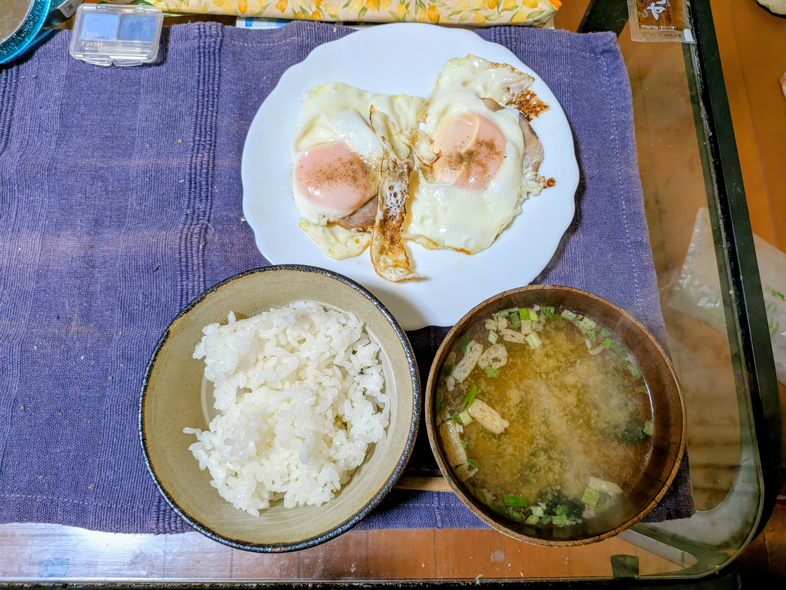
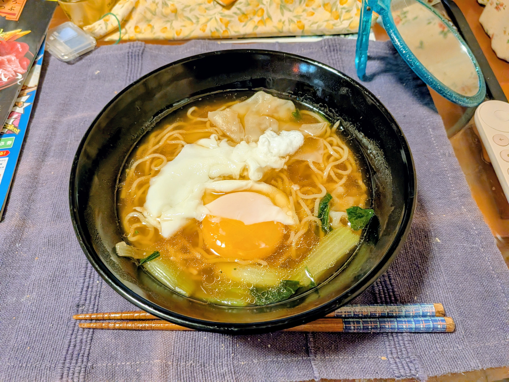
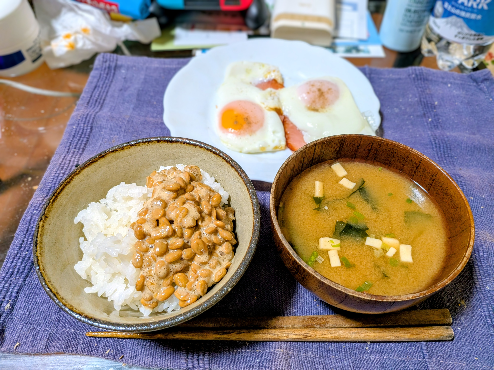
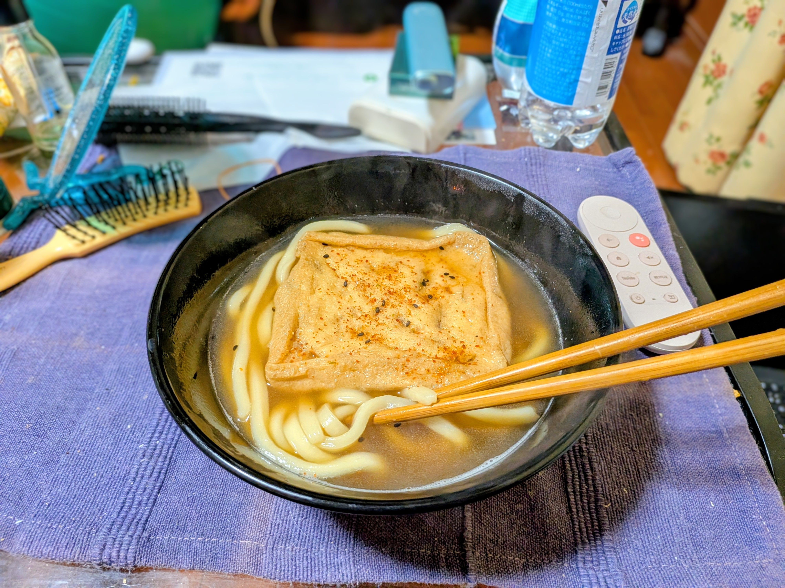
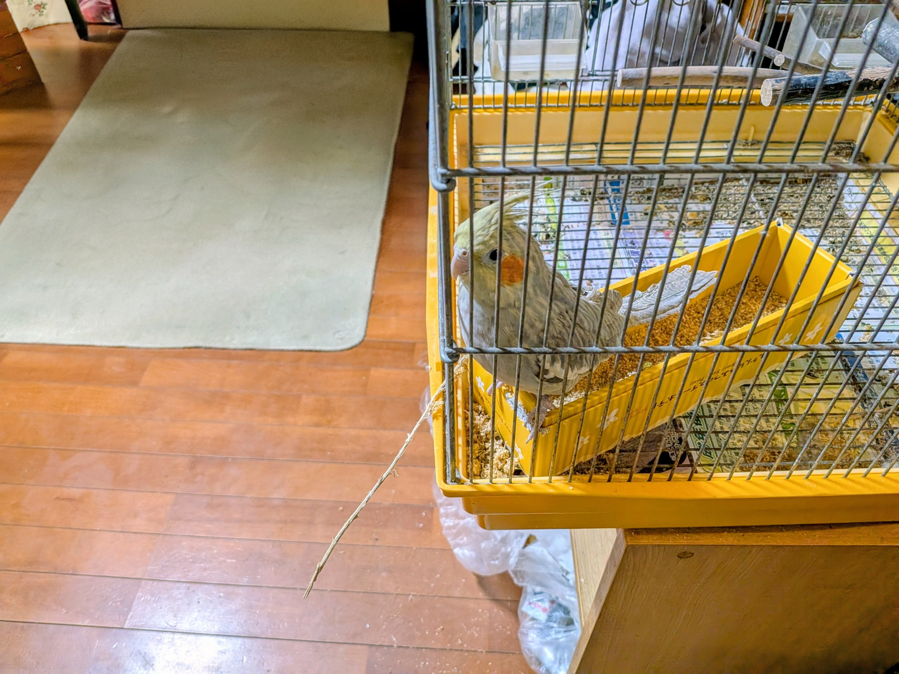
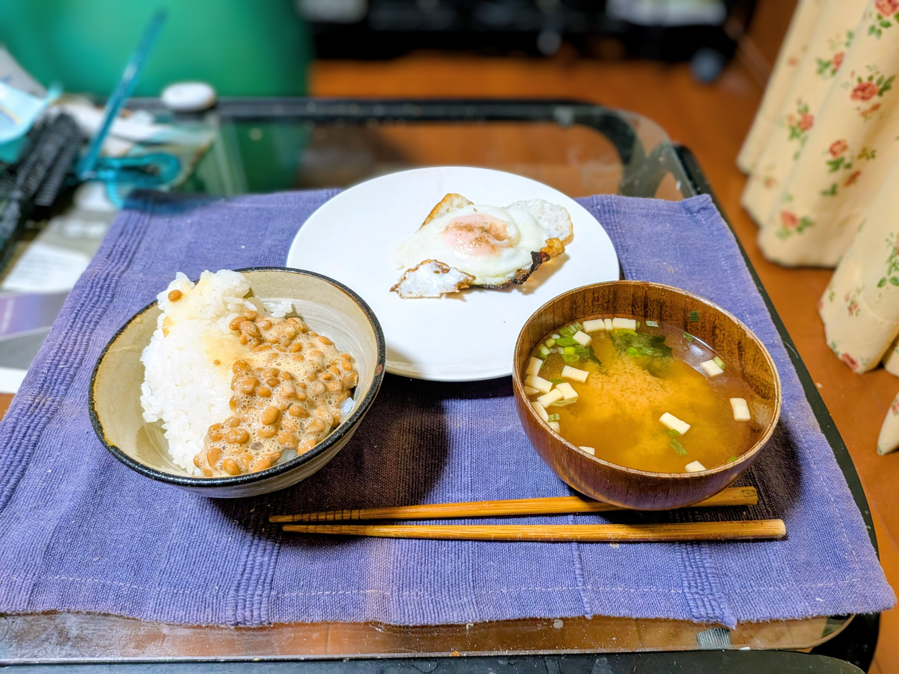

| 日付 | 写真 | カテゴリ | メニュー | 内容・備考 | 原価（概算） |
|---|---|---|---|---|---|
| 2026/01/13 |  | 和食（朝食） |
|
白飯、具だくさんの味噌汁（豆腐・ネギ・わかめ系） | 卵2個 40円 ご飯 50円 味噌汁 30円 合計 約120円 |
| 2026/01/16 |  | 麺類 |
|
醤油系スープ、生卵（半熟）、チャーシュー、もやし、ネギ、青梗菜入り | 麺 50円 スープ 30円 卵 20円 チャーシュー 80円 野菜類 30円 合計 約210円 |
| 2026/01/23 |  | 和食（朝食） |
|
納豆のせ白飯、味噌汁（豆腐・わかめ・ネギ） | 卵2個+ハム 70円 ご飯 50円 納豆 30円 味噌汁 40円 合計 約190円 |
| 2026/02/05 |  | 麺類 |
|
大きな油揚げ（七味唐辛子かけ）、だし系スープ | うどん 40円 だしスープ 30円 油揚げ 30円 合計 約100円 |
| 2026/02/05 |  | ペット（鳥の餌） |
|
オカメインコの餌。黄色いケージのトレイにシードを補充。 | シードミックス（アワ・キビ・ヒエ等） 約25g 約18円 合計 約18円 |
| 2026/02/20 |  | 和洋折衷（朝食） |
|
納豆のせ白飯、食パンに目玉焼きのせ、味噌汁（豆腐・ネギ） | ご飯+納豆 80円 食パン 30円 卵 20円 味噌汁 30円 合計 約160円 |